Урок 1. Где находится клавиша «Winkey»?
На стандартной клавиатуре две клавиши «Winkey», на них изображен логотип Windows, обе находятся в нижнем ряду клавиатуры, одна слева от клавиши «Пробел», между клавишами «Ctr»l и «Alt», вторая расположена справа от «Пробел», между «Alt Gr» и «Menu».
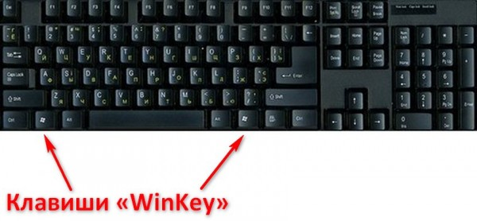 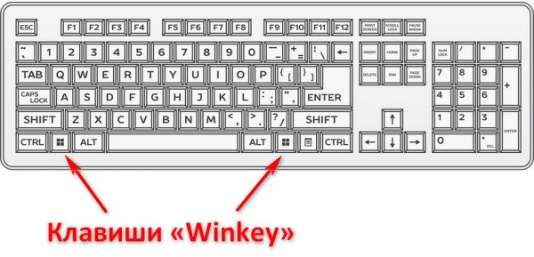Урок 2. Как нажать комбинацию клавиш Win-R?
Нужно зажать «Winkey» и удерживая её нажать на клавишу «R». В результате на экране компьютера должно появиться окно «Выполнить».
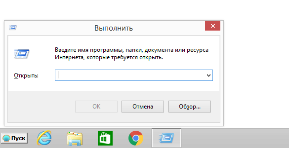Видео о том, как нажать Win-R также можно посмотреть на сервисе «youtube» по ссылке Клик!
Урок 3. Как запустить командную строку?
Можно найти приложение «Командная строка» в меню Windows. Для этого нужно нажать кнопку «Пуск», выбрать «Программы», «Служебные – Windows» и запустить приложение «Коммандная строка».
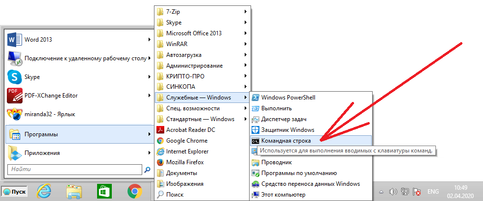Но можно и следующим способом: Нажмите комбинацию клавиш Win-R для запуска средства «Выполнить».
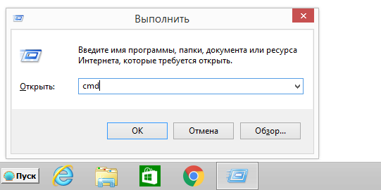В поле «Открыть:» наберите cmd и нажмите кнопку «OK».
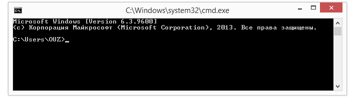На экране должно появится такое окно для ввода команд.
Урок 4. Как пингануть адрес в сети?
Запустите программу «Командная строка» (Например, комбинацией клавиш Win–R и запуском cmd, см. инструкцию).
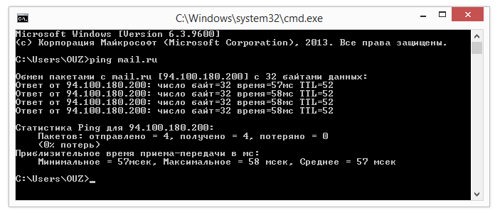Наберите команду ping и, через пробел, имя компьютера, например, mail.ru. Для запуска команды на выполнение нажмите клавишу «Enter». Посмотрите на информацию, отражающуюся на экране, если приходит ответ, то это означает что связь есть (адрес доступен). Попингуй 10.19.2.6! Нет, это не ругательство, это значит, что Ваш администратор сети просит Вас пингануть т.е. выполнить команду ping с параметром 10.19.2.6. И для того чтобы выполнить эту просьбу запустите программу «Командная строка».
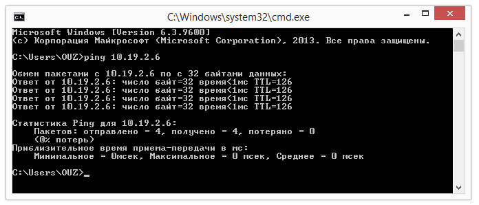Наберите команду ping и, через пробел, 10.19.2.6, например, mail.ru. Для запуска команды на выполнение нажмите клавишу «Enter». Если пришли ответы, то это означает что связь есть, а если появляются сообщения «Превышен интервал ожидания для запроса», то это означает что связи нет.
Урок 5. Как узнать версию Windows?
Нажмите комбинацию клавиш Win-R для запуска средства «Выполнить».
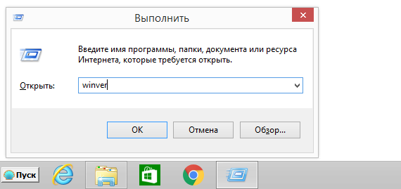В поле «Открыть:» наберите winver и нажмите кнопку «OK».
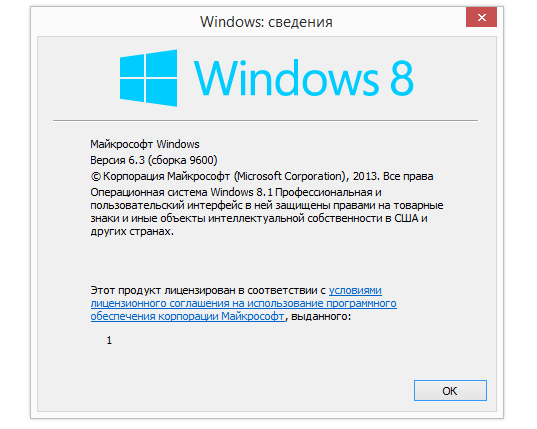Появится окно сведений об операционной системе Windows, установленной на текущем устройстве. На данном примере видно, что установлена «Операционная система Windows 8.1 Профессиональная».
Урок 6. Чем отличается логин от пароля?
При включении компьютера в департаменте появляется приглашение для входа, например, такое.
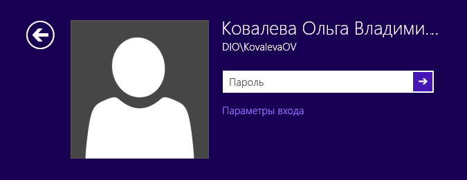На данном примере для входа в рабочий компьютер в департаменте выбран пользователь Ковалева Ольга Владимировна, при этом также видно, что DIO\KovalevaOV – это логин, а пароль – это то, что нужно ввести в поле для ввода пароля.
Урок 7. Где скачать программу для доступа в департамент?
Скачайте архивный файл по ссылке, высланной вам по почте. После загрузки архива с программой, полученный архив нужно распаковать в папку на Вашем компьютере. Например, в D:\ViPNet. Но для установки программы ViPNet-клиент и успешного создания на домашнем компьютере подключения к Вашему рабочему компьютеру Вам нужно знать Ваш логин, Ваш пароль и IP-адрес Вашего рабочего компьютера в департаменте, а также ещё будут нужны инструкции, файл с ключевой информацией и файл с паролем для программы ViPNet-клиент, которые Вам будут высланы на Ваш почтовый ящик. Инструкции, которые помогут правильно установить программу на Ваш компьютер, можно скачать по ссылке https://yadi.sk/d/soxDQJJ8gjnfAg или http://remote.diok.ru/manual/ViPNet После того как Вы получили ключевые файлы, инструкции и скачали программы для установки, поместите их в одну папку. 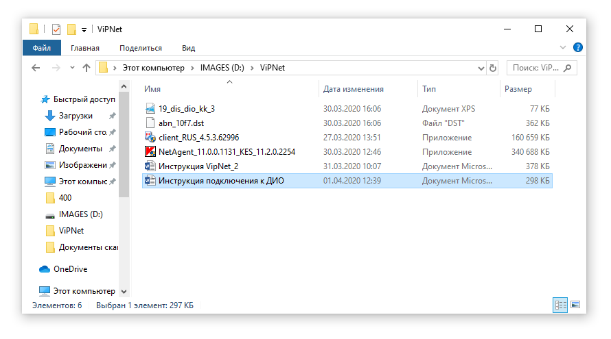
Пример содержимого папки D:\ViPNet, которая содержит файл с паролем в формате XPS, файл с ключевой информацией вида «abn_*.dst», программу доступа в департамент, программу установки антивирусной защиты и инструкции для установки и настройки подключения к ДИО. Дополнительная информация на сайте http://remote.diok.ru
Урок 8. Как войти в ЕМСЭД КК ДЕЛО (emsed.krasnodar.ru)?
Как войти в ЕМСЭД КК ДЕЛО (emsed.krasnodar.ru)?
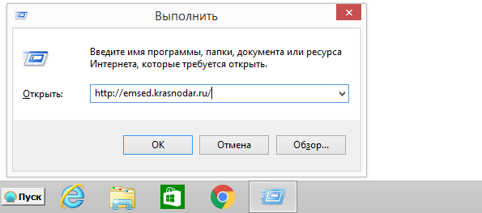В поле «Открыть:» наберите http://emsed.krasnodar.ru/ и нажмите кнопку «OK».
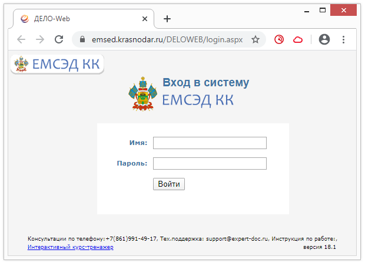Появится окно входа в программу ЕМСЭД КК (ДЕЛО). Введите Ваши имя и пароль для входа в «Дело» и нажмите кнопку «Войти».
Урок 9. Как запустить «Подключение к удаленному рабочему столу»?
Можно нажать Пуск, затем, выбрать «Программы», «Стандартные – Windows» и запустить «Подключение к удаленному рабочему столу».
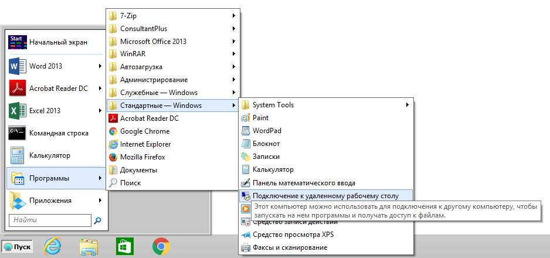А можно и следующим способом: Нажмите комбинацию клавиш Win-R для запуска средства «Выполнить».
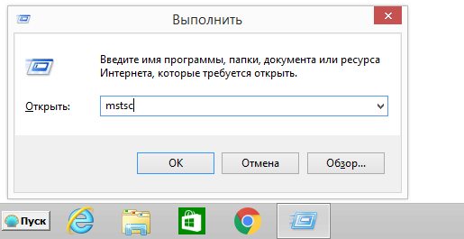В поле «Открыть:» наберите mstsc и нажмите кнопку «OK».
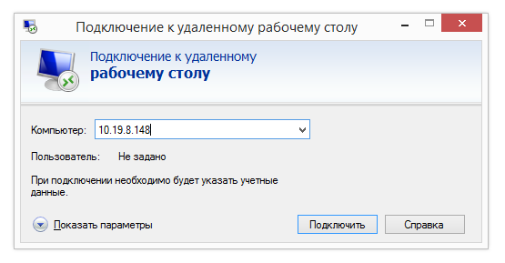В результате должно открыться окно «Подключение к удаленному рабочему столу», где в поле «Компьютер:» нужно будет внести IP-адрес.
Урок 10. Как подключиться к рабочему компьютеру?
Запустите программу «Подключение к удаленному рабочему столу» (Например, комбинацией клавиш Win–R и запуском mstsc, см. инструкцию).
В поле «Компьютер:» наберите IP-адрес Вашего рабочего компьютера в департаменте и нажмите кнопку «Подключить».
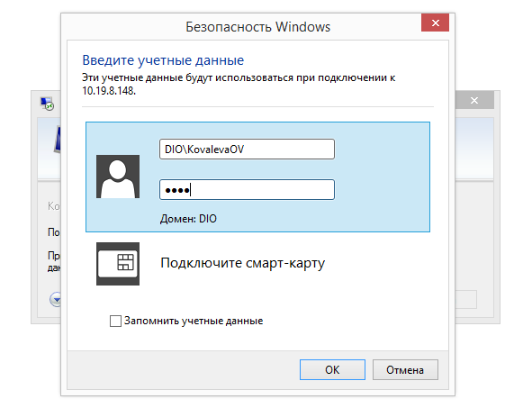Введите Ваш рабочий логин и Ваш рабочий пароль в соответствующие поля формы ввода учетных данных и нажмите кнопку «OK».
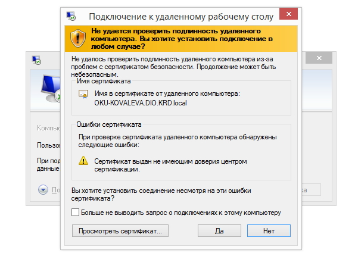В случае появления такого сообщения нажмите кнопку «Да».
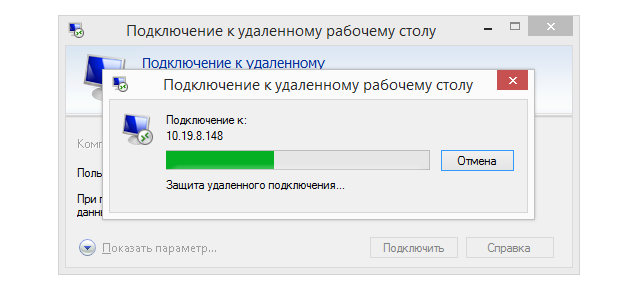Дождитесь окончания установки соединения. После установки соединения у Вас откроется окно для работы на Вашем рабочем компьютере в департаменте. Сверху экрана находится панель управления удаленным доступом.
Элементы управления « » используются для того, чтобы свернуть или закрыть удаленный доступ к рабочему компьютеру. Нажмите кнопку свернуть « » для того, чтобы увидеть рабочий стол домашнего компьютера. Для возврата в рабочий компьютер нужно щелкнуть по иконке удаленного рабочего стола в панели задач (панель задач – это область между кнопкой «Пуск» и часами). Например, как на следующем рисунке.
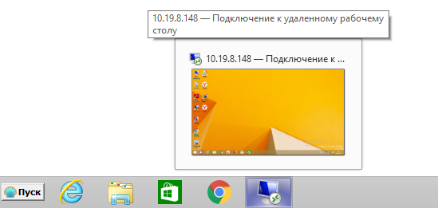Нажмите на иконку « 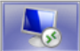 » для продолжения работы с рабочим компьютером. Копирование документов между домашним компьютером и рабочим компьютером, происходит точно также, как и между папками. Выделите документ и щелкните по нему правой кнопкой мыши, в появившемся меню щелкните по пункту «Копировать» левой кнопкой мыши. Переключитесь на другой компьютер и в свободном месте рабочего стола щелкните правой кнопкой мыши, в появившемся меню щелкните по пункту «Вставить» левой кнопкой мыши. Нажмите кнопку закрыть « » для того, чтобы завершить работу с Вашим рабочим компьютером и вернуться на рабочий стол домашнего компьютера. Для повторного подключения к рабочему компьютеру необходимо начать выполнять действия сначала этой инструкции.